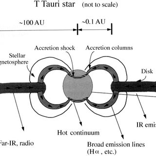
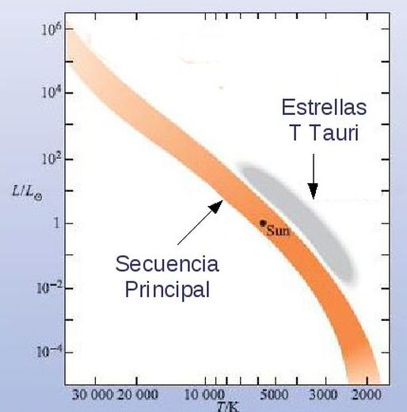
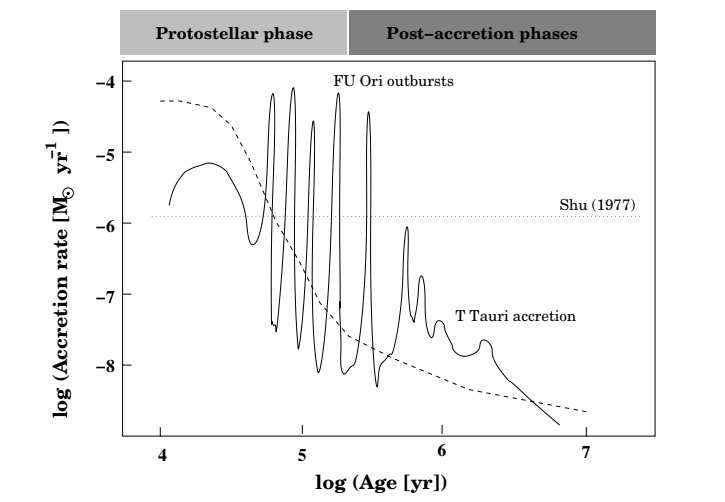

Formación Estelar y Estrellas T-Tauri
Introducción:
Las estrellas comienzan su vida en nubes moleculares de gas y polvo interestelar, compuestas de Hidrógeno, Helio, metales y moléculas livianas. Estas nubes son de tamaños muy extensos y de temperaturas bajas (50K) que con el tiempo pierden momento angular, y comienzan a contraerse en determinadas zonas de mayor densidad. Estas zonas, gracias a la fuerza gravitatoria van a ir acretando materia de su entorno y reduciendo su radio, hasta llegar al radio de la estrella final. Demora alrededor de 10 millones de años el proceso de formación estelar, desde el inicio de una nube molecular, hasta el posicionamiento de una estrella en la secuencia principal en donde comienza a transformar hidrógeno en helio. Entre medio de este proceso, a una estrella que está por nacer se la denomina protoestrella, y en esta monografía nos vamos a centrar en las estrellas T-Tauri, que son estrellas variables jóvenes que aun no alcanzaron la secuencia principal.
Conceptos importantes para la astronomía:
Para la astronomía es difícil trazar una línea entre el proceso de formación protoestelar y la evolución de una protoestrella hacia una estrella madura en la secuencia principal. El objeto central denso que se forma durante el colapso del núcleo de una nube aún no es una estrella, pero tampoco es un núcleo molecular. Las diferencias que existen entre estos términos son las siguientes:
• Protoestrella: Posee un núcleo estelar ópticamente grueso que se forma durante la fase de contracción adiabática y crece durante la fase de acreción.
• Sistema protoestelar: Se refiere a todo el sistema estelar joven con su envoltura descendente y su disco de acreción.
• Estrella PMS: Es una estrella prematura (PMS = pre-secuencia principal) que se vuelve visible una vez que la envoltura de origen se ha acumulado por completo y que se contrae hacia la secuencia principal.
• Sistema estelar PMS: Se refiere a las estrellas PMS con sus discos de acreción y sus regiones de interacción estrella/disco.
• YSO: Se refiere a todo el sistema estelar (YSO = objeto estelar joven) a lo largo de todas las fases evolutivas. Sin embargo, se utiliza específicamente durante las fases de colapso y en el caso de sistemas masivos, donde las fases evolutivas no se pueden distinguir fácilmente.
Los estudios teóricos sobre la evolución protoestelar no suelen diferenciar entre el antes y después de la acreción, ya que la única diferencia entre las dos fases es el hecho de que la protoestrella deja de acretar materia de su envoltura primordial mientras continúa contrayéndose cuasi-hidrostáticamente, esto significa que el disco de acreción se interrumpe para ser alimentado predominantemente por la envoltura. Puede encontrarse esto gráficamente en la figura 4.
Las protoestrellas:

"Figura 1: En esta imagen puede apreciarse a una protoestrella en su núcleo y su disco de acreción alrededor. También se pueden apreciar ciertos jets propios de las protoestrellas."
El orden de magnitud de la tasa de acumulación de masa determina las propiedades de crecimiento de la protoestrella. En el núcleo podemos encontrar a la protoestrella en donde la materia cercana que cae evita que se escape cualquier radiación; a su vez, esta protoestrella está casi en equilibrio hidrostático y continúa creciendo. Su masa originalmente es muy baja del orden de ∼0,001 MSol pero aumenta con bastante rapidez. Como la materia que cae es ópticamente gruesa, cualquier choque de acreción calentará las capas externas y hará que se expandan, aumentando así el tamaño de la protoestrella a unos pocos radios solares. Durante esta expansión, la opacidad fuera del impacto de acreción cae y los fotones pueden escapar. La pérdida de energía radiativa evita que la protoestrella se expanda más y el radio de la estrella permanece bastante constante durante toda la fase de acreción. En la figura 1 puede apreciarse la imagen de una protoestrella.
Estrellas T-Tauri:

"Figura 2: Imagen que representa a una estrella T-Tauri con sus respectivos procesos y sus respectivas partes."
Su origen surge porque la primer estrella estrella T-Tauri fue la estrella T descubierta en la constelación de Tauro en 1852 por el astrónomo John Russel. Actualmente, se aprecian dos tipos de T-Tauri, las clásicas y las de líneas débiles, también llamadas desnudas.
Las estrellas T Tauri son estrellas variables de baja masa (M <3 MSol) en sus primeras etapas de evolución, siendo una PMS como puede verse en la figura 3. Las estrellas clásicas T Tauri tienen tipos espectrales típicos K – M con Teff ∼ 3000–5000 K . Los valores del radio estelar son ∼2–3 RSol. Como sus radios son tan parecidos a un radio solar, son objetos de gran importancia de estudio y suelen ser ópticamente visibles. El material de la nube tiene un alto momento angular y, por lo tanto, se forma un disco de acreción circunestelar. Estos discos de acreción están truncados en la vecindad de un radio de co-rotación donde la presión magnética es igual a la presión del gas en el disco. Las observaciones infrarrojas permiten inferir radios internos de 0,07 a 0,54 UA. La emisión de UV se ha utilizado para estimar la tasa de acumulación de masa, obteniendo valores típicos de ∼10-8 MSol por año. La velocidad de caída casi puede alcanzar la velocidad de caída libre.

"Figura 3: Imagen que representa la ubicación de las estrellas T-Tauri en el diagrama HR. Se puede ver claramente que son estrellas PMS."
Los estudios de rayos X indican densidades del número de partículas del plasma en acumulación de aproximadamente 1012 cm-3. También se detecta una emisión de rayos X térmica variable de las estrellas T Tauri en la banda keV. Se encuentra que las luminosidades están en el rango ∼1031-1033 erg.s-1. Esta emisión proviene de un plasma de alta densidad a una temperatura típica de ∼107 K (Se han detectado llamaradas con temperaturas ∼108 K). Estos brotes tienen una duración de ∼103-104 s. Se espera que tales eventos ocurran en tubos de flujo magnético con una extensión espacial de ∼1010-1011 cm.

"Figura 4: Esta imagen representa la cantidad de masa que se acreta en función del tiempo, tanto en el proceso de protoestrella como en el de post acreción del disco. También se puede notar el momento que una estrella puede llegar a ser una T-Tauri."
Estas erupciones de rayos X se consideran ampliamente como versiones mejoradas de erupciones solares. El calentamiento y enfriamiento rápido del plasma y la aceleración de las partículas deben surgir de procesos MHD eficientes como eventos de reconexión magnética de tipo solar en tubos de flujo retorcidos que conectan el objeto central y el disco circunestelar, como puede verse en la figura 2.
La magnetohidrodinámica (MHD) estudia la dinámica de fluidos conductores de electricidad en presencia de campos eléctricos y magnéticos, como lo son los plasmas, los metales líquidos y el agua salada.
La reconexión magnética es uno de los procesos fundamentales en los plasmas astrofísicos porque explica las liberaciones dinámicas a gran escala de energía magnética. Es esencialmente una reconfiguración topológica del campo magnético causada por un cambio en la conectividad de las líneas de campo. Es este cambio el que permite la liberación de energía magnética almacenada, que en muchas situaciones es la fuente dominante de energía libre en un plasma.
Los fuertes choques resultantes de las eyecciones supersónicas de plasma son el resultado probable de una reconexión masiva en las magnetosferas de las estrellas T Tauri. Estos choques pueden, en principio, acelerar las partículas hasta energías relativistas a través de un mecanismo de Fermi. Este mecanismo es un modelo de aceleración de rayos cósmicos basado en la interacción de estos con el campo magnético del medio interestelar. Este mecanismo se conoce como el "Mecanismo de Fermi de segundo orden". Un segundo mecanismo de aceleración de partículas se produce dentro del frente de onda en su expansión en el espacio. Este mecanismo ha pasado a llamarse "Mecanismo de Fermi de primer orden".
Los valores esperados del campo magnético en las estrellas T Tauri son ∼1 kG y la estructura del campo es compleja y multipolar, como en el Sol.
Suponiendo condiciones de equipartición, Beq2/8pi=2neKT La fuerza del campo magnético en la magnetosfera es aproximadamente 102 G, en donde B representa el campo magnético, y 2neKT=∆P, en donde la parte izquierda representa la ecuación de los gases ideales y el término de la derecha la diferencia de presión externa e interna.
En conclusión, las estrellas T-Tauri son estrellas por nacer de una masa tipo solar y su estudio es de gran importancia por su semejanza al Sol y gracias a los eventos de eyecciones del plasma, la reconexión magnética y las erupciones de rayos x generan una variabilidad en la luminosidad. Se las considera variables eruptivas donde sus pulsaciones no son regulares.
Referencias:
The Astrophysical Journal, 738:115 (8pp) (Septiembre 2011).
Dr. Norbert S. Schulz (2005). "From Dust to Stars_ Studies of the Formation and Early Evolution of Stars".
The Astrophysical Journal, 510:L127-L130 (Enero 1999).